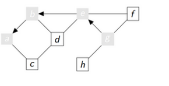
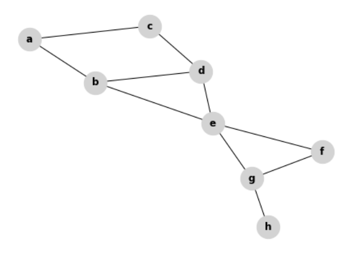

Algorithmes sur les graphes#
Représentations d'un graphe#
Rappels et exemple#
Un graphe est un objet mathématique (très utilisé, notamment en informatique) constitué de sommets reliés entre eux par des arêtes (ou des arcs).
Exemple de graphe :
flowchart LR
title[Graphe1]
B((b)) <--> A((a))
A <--> C((c))
B <--> D((d))
C <--> D
B <--> E((e))
D <--> E
E <--> G((g))
E <--> F((f))
G<--> F
G<-->H((h))Math√©matiquement, on peut d√©finir un graphe ùê∫ par un couple \(G = (V, E)\) avec :
- \(V\) un ensemble de sommets (vertices) (on dit aussi nœuds ou points)
- E un ensemble d’arêtes (edges) (on dit aussi arcs, liens ou lignes)
- Chaque arête est définie par une paire de deux sommets distincts :
\(E \subset \{\{x,y\}|(x,y) \in V^2 ‚àß x \neq ùë¶\}\)
Remarque : Cette expression mathématique signifie que E est un sous-ensemble de l'ensemble de toutes les paires non ordonnées d'éléments distincts de V. Plus précisément :
-
\(V^2\) représente le produit cartésien de V avec lui-même, c'est-à-dire l'ensemble de tous les couples (x,y) où x et y sont des éléments de V.
-
La condition \(x \neq y\) exclut les paires où les deux éléments sont identiques.
-
\(\{\{x,y\}|(x,y) \in V^2 ∧ x \neq y\}\) est l'ensemble de toutes les paires non ordonnées \(\{x,y\}\) telles que x et y sont des éléments distincts de V.
-
\(E \subset\) indique que E est un sous-ensemble de cet ensemble de paires.
En termes simples, E est un ensemble de paires d'éléments distincts de V, où l'ordre des éléments dans chaque paire n'est pas important. Cette notation est souvent utilisée pour décrire les arêtes d'un graphe non orienté, où V serait l'ensemble des sommets et E l'ensemble des arêtes .
Représentation à l'aide d'un dictionnaire#
On peut implémenter ce graphe en Python par un dictionnaire :
G = {}
G['a'] = ['b','c']
G['b'] = ['a','d','e']
G['c'] = ['a','d']
G['d'] = ['b','c','e']
G['e'] = ['b','d','f','g']
G['f'] = ['e','g']
G['g'] = ['e','f','h']
G['h'] = ['g']
Exercice 1
Après avoir implémenter le graphe G. Écrire des fonctions pour obtenir :
- Nombre de sommets
- Nombre d'arêtes
- Degré d'un sommet
- Sommet de plus haut degré
- Voisins d'un sommet
Si on le désire, nous pouvons à partir du dictionnaire G générer également la matrice d'adjacence :
A l'aide d'une liste de liste#
Nous avons vu précédement que un graphe pouvait être représenté par une matrice d'adjacence.
Exercice 2
Implémenter le graphe G avec cette matrice. Écrire les mêmes fonctions que précédemment.
- Nombre de sommets
- Nombre d'arêtes
- Degré d'un sommet
- Sommet de plus haut degré
- Voisins d'un sommet
Exercice 3
Implémenter le graphe du réseau social suivant et determiner celui qui a le plus d’amis.
Un réseau social comporte 6 abonnés (A, B, C, D, E et F) où :
- A est ami avec B, C et D
- B est ami avec A et D
- C est ami avec A, E et D
- D est ami avec tous les autres abonnés
- E est ami avec C, D et F
- F est ami avec E et D
À l'aide d'une bibliothèque#
La bibliothèque networkX permet de manipuler des graphes.
Pour implémenter le graphe G, on commence par importer le module.
On crée un graphe vide.
On ajoute les sommets (appelés node ou vertex)
On ajoute les arêtes (appelés edge)
On peut visualiser le graphe grâce à matplotlib et la fonction draw. Ici on a de plus configuré l’affichage pour que les étiquettes des sommets soient affichées, la taille des sommets soit de 800, la couleur de fond des sommets gris clair.
On peut également le faire avec des listes de sommets et d’arêtes :
Pour la matrice d’adjacence : networkx propose une méthode nx.adjacency_matrix(g2) qui stocke les coefficient saij de la matrice d’adjacence. Il suffit alors de remplir un tableau avec ces coefficients
La documentation de NetworkX est divisée en sections. Il existe notamment :
- une section pour obtenir les méthodes sur https://networkx.org/documentation/stable/reference/functions.html ;
- une section pour obtenir les https://networkx.org/documentation/stable/reference/algorithms/index.html ;
- on pourra aussi consulter le https://networkx.org/documentation/stable/tutorial.html de NetworkX
Voici quelques fonctions :
- degrés d’un sommet du graphe g :
g.degree('a') - nombre de sommets du graphe g :
g.number_of_nodes() - nombre d’arcs du graphe g :
g.number_of_edges() g.predecessors(i): liste des prédecesseurs du sommet \(i\)- `g.successors(i) : liste des successeurs du sommet \(i\)
g.neighbors(i): liste des voisins du sommet \(i\)
Exercice 4
Tester ces différents programmes. Écrire des fonctions permettant d’obtenir les informations suivantes sur le graphe G :
- le nombre de sommets du graphe ;
- le nombre d’arêtes du graphe ;
- le degré d’un sommet ;
- le sommet de plus haut degré ;
- les voisins d’un sommet
Exercice 5
Implémenter le graphe du réseau social suivant et faire afficher celui qui a le plus d’amis un réseau social comporte 6 abonnés (A, B, C, D, E et F) où :
- A est ami avec B, C et D
- B est ami avec A et D
- C est ami avec A, E et D
- D est ami avec tous les autres abonnés
- E est ami avec C, D et F
- F est ami avec E et D
Principe des différents parcours#
Un parcours de graphe est un algorithme consistant à explorer tous les sommets d'un graphe de proche en proche à partir d'un sommet initial. Ces parcours sont notamment utilisés pour rechercher un plus court chemin (et donc dans les GPS) ou pour trouver la sortie d'un labyrinthe...
Tous les parcours suivent plus ou moins le même algorithme de base :
- On visite un sommet A. On crée une structure \(S\) qui contiendra au départ l'ensemble des voisins de \(A\) .
-
Tant que \(S\) n’est pas vide :
- on choisit un sommet s de \(S\)
- on visite s
- on ajoute à \(S\) tous les voisins de s pas encore visités
Le choix de la structure de l'ensemble \(S\) est prépondérant:
- Si on choisit une file (FIFO): on visitera les sommets dans l'ordre d'arrivée, donc les plus proches du sommet précédent. On obtient donc un parcours en largeur nommé Breadth First Search ou BFS.
- Si on choisit une pile (LIFO): on visitera d'abord les derniers sommets arrivés, donc on parcourt le graphe en visitant à chaque étape un voisin du précédent. On obtient donc un parcours en profondeur nommé Depth First Search ou DFS.
Remarque : parcourir simplement le dictionnaire ou la matrice d’un graphe n’est pas considéré comme un parcours de graphe.
Le parcours en largeur (Breadth First Search ou BFS)#
Principe#
Parcourir un graphe en largeur à partir d'un sommet consiste à visiter le sommet puis ses enfants, puis les enfants de ses enfants....
Comme nous l'avons vu dans le chapitre précédent, nous allons utiliser une file et une liste pour marquer les sommets visités.
Exemple#
flowchart LR
B((b)) <--> A((a))
A <--> C((c))
B <--> D((d))
C <--> D
B <--> E((e))
D <--> E
E <--> G((g))
E <--> F((f))
G<--> F
G<-->H((h))Voici le code pour créer le dictionnaire qui représente le graphe précédent et une fonction qui nous retourne la liste des voisins.
Exercice 1
Implémenter ce graphe et tester la fonction voisins}
Pour réaliser le parcours en largeur, on dispose d'un graphe (G, d'une liste (sommet_visite) et d'une file f.
On prend b comme sommet de départ. On l'enfile.
Puis, tant que la file n'est pas vide (boucle while) :
- On défile
fdans une variabletmp; - Si
tmpn'est pas danssommet_visite, alors on l'ajoute àsommet_visite. - Pour chaque voisin de
tmp: s'il n'est ni danssommet_visiteni dans la file, on l'enfile. - On renvoie
sommet_visite.
Voici l'évolution des contenus des variables pour les deux premiers tours de la boucle while :
ÉTAPE 1 :

ÉTAPE 2 :

Exercice 2
Compléter le contenu des variables tmp, sommet_visite et file.
ÉTAPE 3 :

ÉTAPE 4 :

ÉTAPE 5 :

ÉTAPE 6 :

ÉTAPE 7 :

ÉTAPE 8 :

Au final, l'arborescence associée au parcours peut donc être modélisée de la façon suivante :

Le parcours en largeur nous donne donc : ['b', 'a', 'd', 'e', 'c','f', 'g', 'h']
Implémentation du BFS en Python#
Voici une classe File dans laquelle on a rajouté une méthode present(self,x) qui renvoie vrai si x est dans la file.
Remarque : Vous pouvez aussi utiliser votre propre classe File
Et voici l'algorithme du BFS :
fonction parcours_largeur(G, sommet):
sommet_visite ← []
f ← File()
f.enfiler(sommet)
Tant que f n’est pas vide faire :
tmp ← f.defiler()
afficher tmp
Si tmp n’est pas dans sommet_visite alors
ajouter tmp à sommet_visite
Pour chaque voisin de tmp faire
Si voisin n'est pas dans sommet_visite et n'est pas dans la file alors :
f.enfiler(voisin)
Fin Tant que
renvoyer sommet_visite
Exercice 3
Implémenter cet algorithme en Python et tester le sur notre Graphe G
BFS - version récursive#
La présence d’une boucle while nous suggère la version récursive de cet algorithme. On dispose d’un graphe, d’une file contenant le sommet de départ, d’une liste, contenant le sommet de départ et qui nous servira à marquer les sommets visités. Le processus :
- on défile la file dans une variable tmp (on l’affiche)
- pour chaque voisin non déjà visité de tmp
- on le note comme visité
- on l’enfile
- on recommence à partir de l’étape 1 Le processus s’arrête quand la file est vide. Voici le programme :
def bfs_rec(G, f, sommets_visites):
if f.vide():
return None
tmp = f.defiler()
print(tmp, end='')
for u in voisins(G, tmp):
if u not in sommets_visites:
sommets_visites.append(u)
f.enfiler(u)
bfs_recur(G, f,sommets_visites)
f = File()
sommets_visites = []
sommet = 'b'
f.enfiler(sommet)
sommets_visites.append(sommet)
bfs_recur(G, f, sommmets_visites)
Exercice 4 : Faire fonctionner ce programme pour notre graphe.
Application : un chemin entre deux sommets#
L’algorithme BFS découvre les sommets «par cercles concentriques» autour du point de départ. On découvre d’abord tous les sommets à la distance 1 du point de départ, puis à la distance 2, puis 3, etc.
Un sommet situé à la distance 5 sera découvert en tant que voisin d’un sommet à la distance 4, qui lui-même aura été découvert grâce à un sommet à la distance 3, qui lui-même... On reprend notre graphe.
flowchart LR
B((b)) <--> A((a))
A <--> C((c))
B <--> D((d))
C <--> D
B <--> E((e))
D <--> E
E <--> G((g))
E <--> F((f))
G<--> F
G<-->H((h))Par exemple : a-b-e-g-h est l’un des chemins possibles entre a et h.
La méthode consiste à mémoriser les sommets voisins du sommet visité comme clé d’un dictionnaire et ayant pour valeur son parent (le sommet visité).
Le sommet de départ n’aura pas de parent (None).
A la fin, notre dictionnaire sera : '{’a’ : None, ’b’ : ’a’, ’c’ : ’a’, ’d’ : ’b’, ’e’ : ’b’, ’f’ : ’e’, ’g’ : ’e’, ’h’ : ’g’}'
Il nous faudra lire ce dictionnaire pour pouvoir établir le chemin entre a et h. h a pour parent e qui a pour parent b et qui a pour parent a. D’où le chemin : a - b - e - g - h.
fonction parcours_largeur(G_depart):
parents <- dict()
sommet_visite <- []
f <- File()
f.enfiler(depart)
parents[depart] <- None
tant que f n'est pas vide faire :
on défile f dans tmp
Si tmp n'est pas dans sommet_visite alors
l'ajouter à sommet_visite
Pour chaque voisin de tmp faire :
Si il n'est pas dans sommet_visite et pas dans la file alors :
l'enfiler
parents[el] <- tmp
fin tant que
renvoyer parents
Cette fonction renvoie un dictionnaire qui contient les sommets visités (clés) et leurs parents (valeurs).
Il faut maintenant exploiter ce dictionnaire pour faire afficher un chemin entre deux sommets. C’est ce que réalise cette fonction qui prend en paramètre le sommet d’arrivée et le dictionnaire parent.
Exercice 5
Implémenter l’alogorithme en Python et la fonction pour afficher un chemin entre les sommets b et h de notre graphe.
Exercice 6
Reprendre ce travail en utilisant la version récursive du BFS. Il faudra ensuite une fonction pour recréer le chemin.
Remarque : Si le graphe est connexe, tout parcours BFS au départ de A va parcourir l’intégralité du graphe, et donc passera par B à un moment. Un chemin sera donc forcément trouvé entre A et B.
Comment est-on sûr que ce chemin trouvé est le plus court ?
La découverte des sommets par cercles concentriques entre A et B nous assure qu’on ne peut pas rater le point B : s’il est à la distance k de A, il sera forcément visité puisque tous les sommets à la distance k vont passer par la liste d’attente, après les sommets de distance k-1 et avant les sommets de distance k+1.
Lorsqu’on remontera de B vers A en passant par les sommets parents successifs, il ne peut y avoir qu’un seul sommet par «couche» : le chemin sera donc exactement de longueur k, il sera donc minimal.
Le parcours en profondeur(Depth First Search ou DFS)#
Principe#
Parcourir un graphe en profondeur à partir d’un sommet, consiste à explorer le graphe en suivant un chemin. Lorsqu’on arrive sur un sommet qui n’a plus de voisins non visités, on le marque. Puis on remonte dans le chemin pour explorer les voisins non visités d’un autre sommet...On utilise une pile et deux listes.
Exemple#
Prenons en exemple ce graphe :
flowchart LR
B((b)) <--> A((a))
A <--> C((c))
B <--> D((d))
C <--> D
B <--> E((e))
D <--> E
E <--> G((g))
E <--> F((f))
G<--> F
G<-->H((h))On dispose d’un graphe(G), de deux listes (sommets_visités , sommets_fermés) et d’une pile (p). Le sommet de départ est par exemple ’g’, on l’empile. On met le sommet de départ dans la liste sommets_visités. Puis tant que la pile n’est pas vide :
- On récupère le sommet de la pile dans une variable tmp
- voisins reçoit la liste des voisins de tmp non déjà visités
-
Si voisins n’est pas vide :
- v←un voisin choisi au hasard
- sommets_visités←v
- On empile v
-
Sinon :`
- sommets_fermés ← tmp
- On dépile p
Voici les contenus des variables au premier tour de la boucle tant que :
- tmp :
g - voisins :
[’e’, ’f’, ’h’] - v :
e - sommets_visités :
[’g’, ’e’] - pile :
[’g’, ’e’] - sommets_fermés :
[]

- tmp :
e - voisins :
[’b’, ’d’, ’f’] - v :
b - sommets_visités :
[’g’, ’e’, ’b’] - pile :
[’g’, ’e’, ’b’] - sommets_fermés :
[]

Exercice 7
Compléter les contenus des variables
- tmp :
- voisins :
- v :
- sommets_visités :
- pile :
- sommets_fermés :

- tmp :
- voisins :
- v :
- sommets_visités :
- pile :
- sommets_fermés :

- tmp :
- voisins :
- v :
- sommets_visités :
- pile :
- sommets_fermés :

- tmp : []
- voisins : d
- v :
- sommets_visités :
[’g’, ’e’, ’b’, ’a’, ’c’, ’d’] - pile :
[’g’, ’e’, ’b’, ’a’, ’c’] - sommets_fermés :
[’d’]
Exercice 8
Poursuivez
- tmp :
- voisins :
- v :
- sommets_visités :
- pile :
- sommets_fermés :
- tmp :
- voisins :
- v :
- sommets_visités :
- pile :
- sommets_fermés :
- tmp :
- voisins :
- v :
- sommets_visités :
- pile :
- sommets_fermés :
- tmp :
- voisins :
- v :
- sommets_visités :
- pile :
- sommets_fermés :

- tmp :
- voisins :
- v :
- sommets_visités :
- pile :
- sommets_fermés :

- tmp :
- voisins :
- v :
- sommets_visités :
- pile :
- sommets_fermés :
- tmp :
- voisins :
- v :
- sommets_visités :
- pile :
- sommets_fermés :

- tmp :
- voisins :
- v :
- sommets_visités :
- pile :
- sommets_fermés :

- tmp :
- voisins :
- v :
- sommets_visités :
- pile :
- sommets_fermés :
Remarque : Comme les choix dans la liste des voisins sont aléatoires, il y a plusieurs parcours possibles.
Au final l’arborescence associée au parcours peut donc être modélisée de la façon suivante :
[’d’, ’c’, ’a’, ’b’, ’f’, ’e’, ’h’, ’g’]

DFS version 1#
Voici une classe Pile :
Vous pouvez également utiliser votre propre classe Pile.Voici le code pour la création du dictionnaire qui représente le graphe G et une fonction qui renvoie les voisins d’un sommet.
Voici une ligne de code qui permet de récupérer les voisins de tmp non déjà visités :
La bibliothèque random permet un choix aléatoire dans une liste :
fonction parcours_profondeur(G,sommet):
sommets_visites <- []
sommet_fermes <- []
p <- Pile()
sommets_visites <- sommet
on empile le sommet dans p
Tant que p n'est pas vide faire
tmp <- le sommet de la pile
voisins <- la liste des voisins de tmp non déjà visites
Si voisins n'est pas vide alors
v <- un voisin au hasard
sommets_visites <- v
on empile v
Sinon
sommets_fermes <- tmp
on depile p
fin tant que
renvoyer sommets_fermes
Exercice 9
Implémenter cet algorithme en Python et tester le sur notre graphe G.
Remarque : Comme les choix dans la liste des voisins sont aléatoires, il y a plusieurs parcours possibles.
DFS version 2#
Exercice 10
Tester cette version sur notre graphe G.
DFS version 3 (récursive)#
On peut utiliser un algorithme récursif pour parcourir un graphe en profondeur. En voici la description :
- On part d’un nœud du graphe.
- On le marque comme visité s’il ne l’est pas déjà.
- Pour chacun de ses voisins non visités, on reprend à partir du 1.
Il y a une "boucle" du 3. au 1. Cela présage une méthode récursive. Voici l’algorithme davantage détaillé :
Données :
G est un graphe
sommet est un sommet du graphe
sommets_visites est une liste
fonction dfs(G,sommet):
Si le sommet n'est pas dans la liste sommets_visites alors
on le met dans la liste
voisins <- la liste des voisins de sommet non deja visites
Pour chaque voisin dans voisins faire
dfs(G,voisin)
renvoyer sommets_visites
Exercice 11
Écrire la fonction dfs et la faire fonctionner avec notre graphe avec comme sommet de départ ’g’.
Remarque : Le choix du premier voisin est le premier de la liste voisins qui correspond à celle implantée lors de la création du graphe: G['g'] = ['e', 'f', 'h'], en la modifiant par G['g'] = ['f', 'e', 'h'], vous obtiendrez un autre parcours...
Application : un chemin entre deux sommets#
L’objectif est de faire afficher un chemin entre deux sommets d’un graphe.
flowchart LR
B((b)) <--> A((a))
A <--> C((c))
B <--> D((d))
C <--> D
B <--> E((e))
D <--> E
E <--> G((g))
E <--> F((f))
G<--> F
G<-->H((h))Par exemple : a - b - e - g - h est l’un des chemins possible entre a et h
La méthode consiste à mémoriser les sommets voisins du sommet visité comme clés d’un dictionnaire et ayant pour valeur son parent(le sommet visité).Le sommet de départ n’aura bien entendu pas de parent (None).
Cette fonction renvoie un dictionnaire qui contient les sommets visités(clés) et leurs parents(valeurs).Il faut maintenant exploiter ce dictionnaire pour faire afficher un chemin entre deux sommets. C’est ce que réalise cette fonction qui prend en paramètre l’arrivée et le dictionnaire parents.
Exercice 12
Implémenter l’algorithme en Python et la fonction Solution pour faire afficher un chemin entre les sommets b et h de notre graphe G.
Exercice 13
Reprendre ce dernier travail en utilisant et modifiant la fonction dfs_bis.
Recherche de cycle#
Rappels#
Une chaîne est une suite d’arêtes consécutives dans un graphe, un peu comme si on se promenait sur le graphe. On la désigne par les lettres des sommets qu’elle comporte. On utilise le terme de chaîne pour les graphes non orientés et le terme de chemin pour les graphes orientés.
Un cycle est une chaîne qui commence et se termine au même sommet.

a - b - e - d - c - a est un cycle
L’existence de cycle dans un graphe permet d'effectuer un trajet en revenant à son point de départ sans faire demi-tour...
Algorithme de la présence d'un cycle#
Voici un programme qui détecte la présence d’un cycle dans un graphe connexe non-orienté:
Exercice 1
- Quel type de parcours utilise ce programme ?
- Quel est le type des éléments placés dans la file ?
Exercice 2
Faire fonctionner ce programme à la main sur ce graphe en partant du sommet 'a' :

Exercice 3 Pour finir de vous convaincre...Faire fonctionner ce programme à la main pour le graphe ci-dessous en partant du sommet 'a'. Noter les contenus des variables au dernier tour.

Bibliographie#